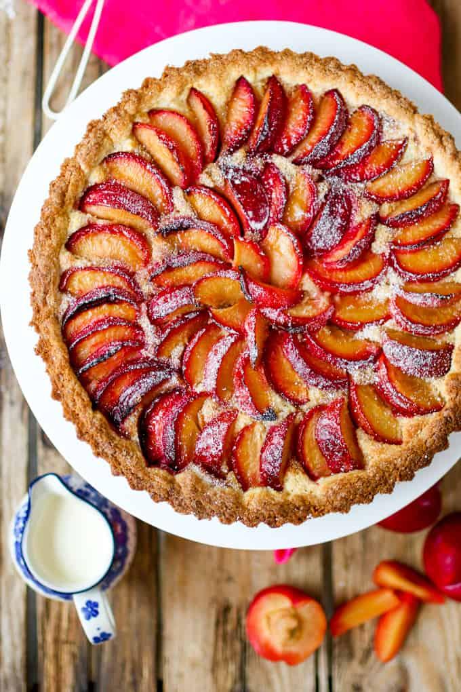

Plum and Almond Tart

Recipe Background
This recipe has been passed on for generations on my mom's side of the family.
Don't you love it when recipes carry on for eons before they actually give you the damn ingredients. Blah
blah blah blah - yadi yadee yahehi...
Ingredients
Frangipane
- 1 quantity of shortcrust pastry
- 100 grams butter
- 125 grams sugar
- 2 eggs
- 2 tsp vanilla extract
- 50 grams flour
- 175 grams ground almonds
Decorations
- 10 plums
- 1 tbsp sugar
- Icing sugar (for garnish)
Steps
- mix all the ingredients together
- Smash them all in a pan and hope it works
- put some sliced plums coated in sugar
- dust with icing sugar and toss it in the oven
Back